A tour of every panel, gesture and shortcut in Equation Studio. The README explains what the scenes are and which of them use an artist’s own formulas or code. This guide explains how to read a scene, take it apart, play with it and build your own. Everything runs on your computer; nothing is uploaded. Hover any control in the app (or press and hold it on a touch screen) to see what it does, its shortcut, and whether it is on. ? Help in the top bar opens a short version of this guide.
Yes. Your graphics chip (GPU) computes the picture from the math every time anything changes: a setting, a wire, the camera, the time. There is no stored picture behind it. The only saved pictures are the small thumbnails in the Scenes gallery.
The LIVE badge in the corner of the picture says whether a hardware graphics chip does the work (GPU) or the browser fell back to software rendering (SOFTWARE, in amber). It also shows the resolution, how long the last frame took on the GPU and a frame counter, and its dot blinks on each new frame. Click it, or the GPU label in the footer, for the GPU dialog (Your GPU and how fast it draws). It names the graphics chip and its API, says what it supports (float read-back, background shader compilation, GPU timers), and lists the last frame time, the programs compiled for this scene and how long each took. When hardware acceleration is off, it says how to turn it on. Web pages cannot use a neural processing unit (NPU) for this kind of per-pixel work, so the GPU is the accelerator that matters.
When you change the wiring, add a part or apply an edit, the scene’s shader is recompiled in the background. The previous picture stays up with a Compiling shader… indicator and a progress cursor, and the page keeps responding. Everything else (settings, switching parts on and off, choosing what the picture shows) never recompiles.
| Area | Where | What it is for |
|---|---|---|
| Top bar | top | ☰ Scenes opens the gallery. Then the scene’s name and a line saying where it comes from, ↶ ↷ (undo and redo), ⟲ Start over, Open, Save, ? Help and Export |
| Picture | center | The live picture. The view switch above it chooses what it shows (Whole picture, Just this part, What this part adds, What moves); on the right are Fit, ◐ Hold to compare and the View ▾ menu |
| Parts strip | under the picture | The parts the scene is built from, in order, each with a small live picture of what it makes. Its tabs switch to Wiring, All the math and Shader code |
| Side panel | right | Either the whole scene (About this scene: its story, Try this, how it works, its parts) or one part (its math or code, and every control) |
| Time bar | bottom | ▶ and ⏮, the time in seconds, the time bar with frames of the whole animation under it, Speed, Loop and Length; a lane for every setting with keyframes |
| Footer | very bottom | The GPU doing the work (click it for details), ◐ Contrast, whether your work is kept in this browser, and how many parts the scene has |
The library is a drawer with three tabs: Scenes,
Parts and Snapshots. ☰
Scenes opens it on the gallery, and ＋ Add a
part (above the parts strip) opens it on the parts. It closes
when you choose something, click elsewhere or press Esc.
⇥ Keep open turns it into a column next to the picture
instead. At its bottom, ◈ Where these came from opens
the notes on every scene’s sources.
The View ▾ menu holds everything about how the picture is shown: Rulers, Grid and Measure along a line; Brightness, Light to color and Sharpness; Frames on the time bar; and Snapshot, Compare with a picture…, Copy image and Expand the picture (which hides the side panels until you choose it again).
Drag the side panel’s left edge to make it wider or narrower, and the bar above the parts strip to give the parts more room. Double-click either one to reset it.
[ and
], or ◀ ▶, open the previous and next part.Clicking a part opens it in the side panel, wherever you click it: a card in the parts strip, a line in How it is built, a card in the Wiring view, a block in All the math, or an input or output in the Connections tab. Opening a part never changes what the picture shows. If it shows the whole picture, it keeps showing it while the panel explains the part.
To see the part on the picture, choose Just this
part (I), which shows only what the part makes, or
What this part adds (C), which shows what
it changes. Both then follow you as you open other parts or step with
[ ]. Whole picture
(Esc) goes back. Double-click a part to
open it in the wide panel.
The same four colors mean the same thing everywhere in the studio:
| Color | It means | Where you see it |
|---|---|---|
| Orange | something you can change | sliders, the numbers in code that you can drag, the letters of settings in the math, Try this |
| Pink | time | the letter t, the play button, the time and the time bar, keyframes ◆ once they are set, What moves |
| Blue | what comes into a part | letters in the math that come from earlier parts, like where the pixel is |
| Green | what a part makes | the result in the math, the final picture, checks that passed (✓) |
Everything else, such as the part you have open, the tabs and the menus, is plain gray and white, so a color always tells you something. The Wiring view adds one more set of colors, for the kind of thing that travels along each wire (see The Wiring view).

On your first visit the Scenes gallery opens by itself, with a welcome line: Pick something to explore. It lists Start here · easy ones first. Then come the others, grouped by kind: animations made from code (twigl), animations made of dots (p5.js), our own studies, and scenes built from parts. Every card has a difficulty badge, Easy (●○○), Medium (●●○) or Expert (●●●), and says how long its loop is in seconds you can read at a glance (6.3 s, 47 s).
The chips above the cards (All, Code, Dots, Built from parts, Studies) and the artist menu narrow the list, and the search box finds names, artists, tags and descriptions. Each card shows a saved thumbnail. Hold the pointer over it (or focus it with the keyboard) and it comes alive: the scene is drawn small and live from its math.
Click a card to open the scene. It starts playing at once, unless your system asks for reduced motion, and the side panel tells its story. Once you have chosen a scene from the gallery, the gallery stops opening by itself; ☰ Scenes always brings it back.
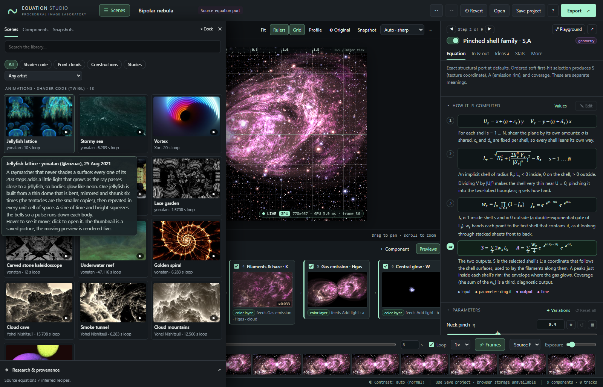

When a scene opens, the side panel shows About this scene. At the top are the scene’s name, who made it (with a link to the original post for the artists’ works) and its difficulty badge. An artist’s work also gets a check badge. ✓ Made from the artist’s own code (or sketch) means the picture was compared with what the artist’s own code draws. Our own study of the look means the artist did not publish code, so the scene is our own attempt at the look. On your first visit a welcome note sits under the badges. Then come these sections, in the order a newcomer needs them:
The scenes built from parts have a guide of their own, with the same story, difficulty and challenges. A scene you built yourself shows its description and its parts.
Each challenge makes one change that you can see. It may change a setting (Use only 2,000 dots. Can you still see the jellyfish?), make a small edit to the code or formula (Change 5 to 9 in the color line…), switch a part off, show just one part or what moves, put a value of the code on the picture, or build the picture up one loop step at a time. Press Try it and the change happens; most challenges also start the animation, so you see the change move. A challenge you have tried gets a ✓, and its button says Again.
You cannot break anything. Undo
(Ctrl/⌘ Z, or ↶ in the top bar) takes back a changed
setting, a code edit or a switched-off part in one step. Whole
picture above the picture (or Esc) goes back from
a changed view, and Esc also stops a build-up. ⟲
Start over brings back the whole scene as it was. If a
challenge no longer fits the scene, for example because you deleted its
part or rewrote its code, it is dimmed.
For the artists’ works, HOW IT WORKS is a walk-through in numbered steps. Click a step to open it. It explains one idea in a few sentences and shows the lines of code (or of the formula) it is about. Some steps also change the picture while they are open: they put one value of the code on it (the label says VALUE and its name), or stop a loop early so that you see the picture half-built. The step says what it changed. Click the step again, or ✕ Close the step, to go back to the full picture.
See it in the whole code › opens the part with the same lines highlighted in its code. A banner above them says which step you are on (How it works · step 2 of 5), and ✕ End finishes the walk-through.
The Parts tab under the picture lists every part in the order the scene works them out, each one after everything it uses. The cards are compact: a checkbox to switch the part on or off, its number and name, and a small live picture of what it makes. Hover a card to read what the part does and what uses it; How it is built in the scene panel lists the same. FINAL marks the part that makes the final picture and NOT USED a part that nothing uses. 👁 marks the part the picture shows, and ✎ a part with an edit you have not applied yet.
Some values have no color of their own, such as numbers and positions. Their small pictures use the same automatic colors as the picture (see below), each over its own range. A picture shown brighter or darker than normal is labelled with the factor, e.g. ×0.033.
Click a card to open the part; the checkbox alone switches it on or
off (see Switching parts on and
off). When a card has keyboard focus, the arrow keys move to the
next or previous one. The bar above the cards says how many parts are on
(5 of 6 parts on) and holds All on,
Start empty and As it started. On its
right are ＋ Add a part, Pictures
(P, the small pictures on or off), Find
(L, for the Wiring view) and ▾ Hide, which
folds the strip away to give the picture more room (▴
Show brings it back; the scene panel lists the parts too).
The switch above the picture chooses what it shows:
Esc): the scene’s
finished picture, the same one Save and Export use.I): only what the open
part makes, before any later part uses it.C): the whole
picture drawn with and without the open part (switched off). The menu
next to the switch chooses how: In color keeps the picture
where the part matters and turns the rest gray, and Lighter or
darker is warm where the part adds light and cool where it takes
light away.M): see Seeing motion.In Just this part and What this part adds, the picture follows the part you open. Press 🔓 (Keep showing this part) to lock it, for example to watch one part while you tune an earlier one. Then open other parts as you like: the picture stays where it is until you unlock it.
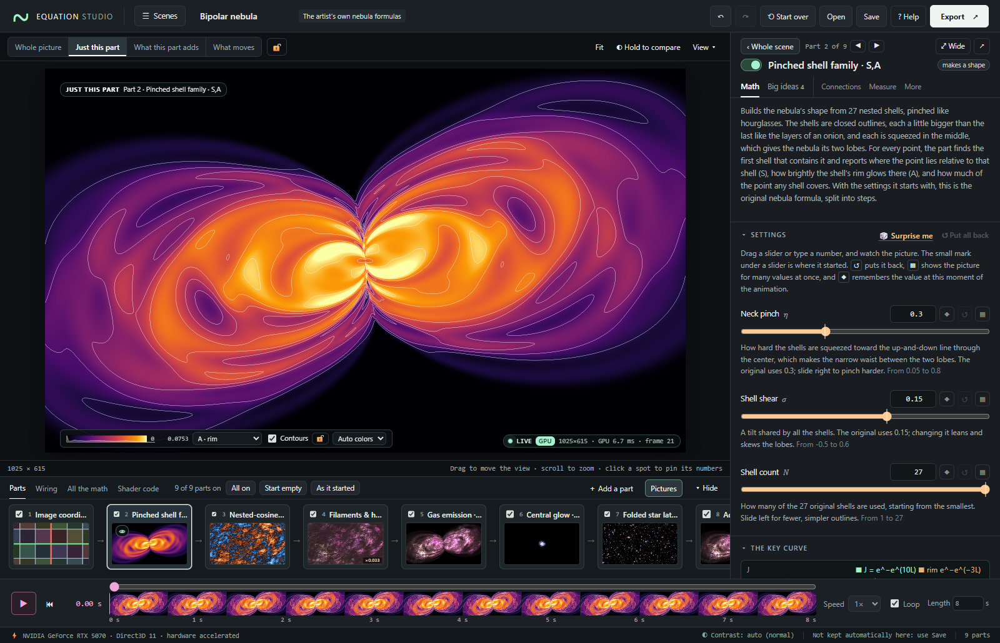
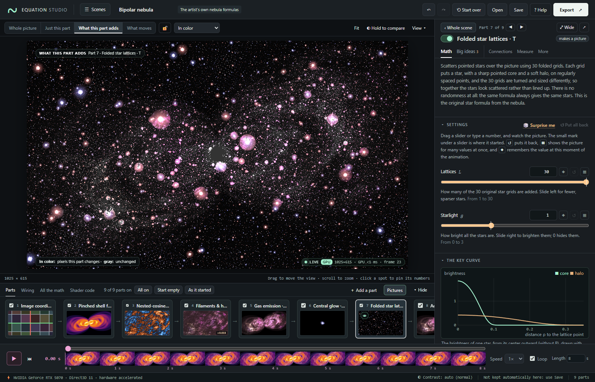
Pictures and light appear as themselves. Numbers, positions and shapes have no color of their own, so the studio picks colors from the values actually in view, and the legend at the lower left of the picture explains them:
| What the part makes | Automatic colors | Legend |
|---|---|---|
| numbers (a scalar field) | a color scale from the lowest to the highest value. When the numbers are both negative and positive, a two-sided scale: cool below zero, near-black at zero, warm above, the same on both sides. White contour lines show where the numbers cross round values, and the zero line is brighter | a color bar with the range and a histogram of the values in view |
| positions (coordinates) | the picture of a regular grid: each cell keeps its own pastel color, with gray lines at multiples of the cell size, red where q_x = 0 and green where q_y = 0. A warp bends the grid; polar coordinates (distance and angle around the center) turn it into rings and spokes | the cell size |
| a shape (geometry) | one of its three values as numbers: S (the position along the shells), A (how brightly the rim glows) or coverage; or all three at once in red, green and blue | a menu to choose |
| a picture (a color layer) | as it is, unless it is almost all white or all black at the scene’s brightness. Then its brightness is adjusted so you can see its structure | the factor, e.g. ×0.033 exposure |
The legend’s controls choose the channel, the contour lines, the automatic brightness and Classic colors (the fixed colors of version 1.x: gray = ½ + ½·tanh(value); red/green = ½ + ½ sin of the coordinates; red rim, green coverage, blue warp). Its 🔓 keeps the current color range, so you can change a setting and compare colors fairly. On a narrow picture the controls fold behind ⚙. The readings and Measure along a line give the exact numbers behind any color.
Rulers (R) and Grid
(G) are in the View ▾ menu and are off
until you switch them on. The rulers show positions along the edges of
the picture, with ticks every 1, 2 or 5 units (or a tenth or ten times
that) to suit the zoom; the top-right corner shows the size of a big
tick. With the rulers on, a crosshair follows the pointer and shows its
position, the pixel, the color there and the actual
value made by the part on the picture (in Just this
part) or by the open part (otherwise). With the rulers off, the
line under the picture shows the position, pixel and color under the
pointer.
Click the picture to pin a reading, with or without
the rulers. The reading, marked PINNED, stays where you clicked, shows
the value there, and updates as you edit or play. Unpin
× or Esc removes it. Alt-click shows one raw value
in a message. Rulers, grid, readings and labels are never part of an
export.
Measure along a line (V, in the View
menu) opens a graph under the picture. It plots the actual
numbers made by the part on the picture along the line across
the picture through the pointer, or through the pinned reading. The menu
in its header switches to Up and down (a vertical line) or to
Over time, at one point. A dashed line on the picture shows
where it measures. Numbers give one curve, positions their x and y,
shapes S, A and coverage, and pictures their red, green and blue light
(before brightness and Light to color) and coverage. Below the graph are
each channel’s smallest, largest and average value along the line. The
graph makes the shape of a function obvious: the bump of a Gaussian
ring, the step of a threshold, the zigzag of a fold, the spikes of
stars.
All the math writes the whole scene out as math. At the top, the whole picture, as math, shows how the parts that combine others (Add light, Front over back, Tint, Mask, Combine scalar fields) put the picture together, e.g.
image = Gas emission + Central glow + Folded star lattices
Below it comes every part in order. Each input is bound to the part that feeds it (p ← Image coordinates · S, A ← Pinched shell family), then come the part’s math and where what it makes goes (→ Add light as B). Hover a line for its explanation, and click a block to open that part.
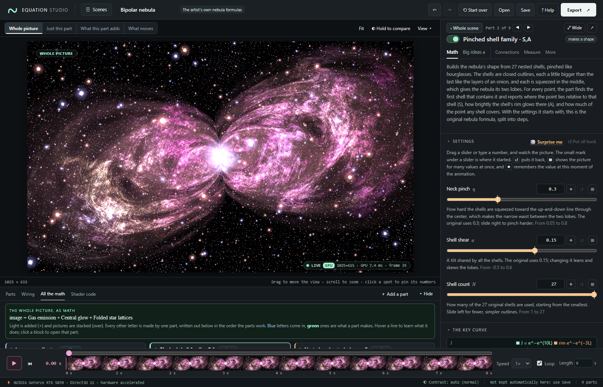
Drag the picture to move the view. Scroll or pinch to zoom in or out
around the point under the pointer. Fit
(F) brings back the starting view; at 2000 × 1200 pixels it
reproduces the source grid of the original nebula exactly. The camera is
saved with the scene and undone like any other edit.
Sharpness (in the View menu) sets how many pixels the studio computes. Auto · sharp, the default, matches your screen, including high-density screens. While you drag, or while the animation plays, frames that take longer than about 24 ms on the GPU are drawn at a lower resolution, and the picture sharpens again when you let go. The fixed sizes draw exactly that width. Every setting computes the same math; exports choose their own size.

When you open a part, the side panel explains it and lets you change it. Its header stays in view while you scroll:
[ ]) open the previous and next part.
On the right, ⤢ Wide makes the panel wide (the wide panel, E) and
↗ opens the part in its
own window.Math shows what the part computes, in this order:
Code and Look inside belong to Shader code parts: see The Code tab and Look inside.
Big ideas explains why the math is written the way it is. It shows the ideas that come up again and again in pictures like this, e.g. Folding with arccos(cos t), The double-exponential gate and Front-to-back selection. Each has its formula, an explanation and often a small graph with a slider to play with. Under them, Other letters in the math explains the part’s fixed constants and in-between values.
Connections shows where each input comes from and where the part’s result goes. For each input you see the part that feeds it (change it with the menu), ＋ to put a new part in between (for example a warp before a pattern), and a small picture of what comes in. For the result you see every part that uses it, the letter it goes by there, and the line of math that uses it: for example, the stars’ result T is used by Add light as B in RGB = A + gB. Click any of them to open it. ☆ Make it the final picture makes this part’s result what the scene shows, saves and exports.
Measure measures what the part makes: see Measuring: the Measure tab.
More has three sections. SHADER CODE shows the shader code the part adds to the scene’s program (and, for a part that calls a library function, that function’s source). KEYFRAMES lists the settings that change over time: choose how each one moves between its keyframes (smooth, linear or hold), or delete keyframes and whole tracks. THIS PART has Swap for…, Duplicate and Delete.
Click a section’s heading to fold it away, and again to open it.
⤢ Wide (E, or double-click any part)
makes the side panel wide, for studying one part. The panel takes half
the window. On a wide screen its Math tab gets two columns, with the
settings and key curve on one side and the math on the other. The
picture switches to Just this part (unless the part makes the
final picture) with Measure along a line under it, and
the parts strip shrinks to a row of names so the picture keeps its
height. Nothing else moves: you still go from part to part with the
strip, [ ] or ◀ ▶. Esc first
brings back the whole picture and then closes the wide panel; ⤢ or
E closes it at once.
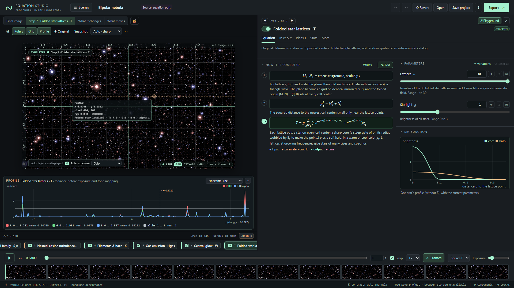
↗ opens the panel for the open part in a separate
browser window, for example on a second screen next to a full-size
picture. The window follows the part you open; tick Pin
to keep it on one part while you open others. Its controls change the
scene in the main window, and Ctrl/⌘ Z undoes there too.
The window closes with the page. If the browser blocks pop-ups, the wide
panel opens instead. Phones and tablets, which open no second windows,
hide ↗ and use the wide panel.
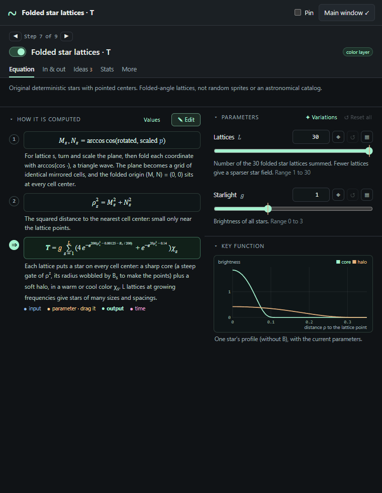
Every part whose inputs are numbers or positions can be edited as math: the custom equation parts, and the built-in parts that do not read pictures or shapes. It works the same way for all of them:
param lines named after their letters (κ
becomes kappa, c_x stays c_x), at their
current values.Ctrl/⌘ Enter) puts it into the
scene as one undo step; Cancel throws it away. Math
with a mistake is not applied, and nothing else changes. A built-in part
becomes your equation when you apply: it keeps its wiring, setting
values and animation, and its name gets “· equation” added. Undo brings
back the original.
When you apply, a setting keeps its current value if its
param line is unchanged. If you edit its default
(param bands = 14 to = 30), it takes the new
default. Settings that no longer exist are dropped, together with their
keyframes.
Parts that read a picture or a shape (tint, mask, the parts that combine others, most of the original nebula) cannot be written as math yet; their ✎ Edit is dimmed, and its tip says why. Some built-in parts are loops over many terms (the star lattices, the nebula clouds, whole scenes such as the water planet). Their math is a call of the shader-library function that runs the loop, and that function’s code is under More ▸ Shader code. You can still change what goes into it and what comes out.
An equation is a short program, one statement per line:
// A glowing ring (lines starting with // are ignored)
param radius = 1 [0.1, 3] // distance of the rim from the center
param width = 0.1 [0.005, 1] // thickness of the rim
d = length(p) - radius // signed distance to the circle
exp(-(d / width)^2) // a Gaussian bump across it: the resultparam name = value [min, max] adds a
setting with a slider (step 0.01 after the
range sets its step). It behaves like any other setting: put back, many
values at once, keyframes, Surprise me.
param tint = #ffd080 adds a color.name = expression is a definition,
which the following lines can use.vec2(…) for a coordinate equation, and a
color vec3(…) (or vec4(…) with coverage) for a
color equation.// … after a line is its caption,
shown next to the typeset line in The math, step by step.The names you can use are p = (x,
y), its distance from the center r and its
angle theta, the optional inputs a and
b, the time t, and PI and
TAU. You can call the GLSL built-in functions
(sin, mix, smoothstep,
length, clamp, …) and every function of the
shader libraries: helpers such as fbm, noise2,
rotate2, gaussian, cutoff,
softInside, spectrum, vortex,
domainWarp and angularMirror, and whole scene
kernels such as waterPlanet(p, 1, 0.6, 5, 2, t) or
nebulaStars(p, 30, 1). The Insert… menu
under the editor lists them with their arguments, and How to write
equations beside it sums up the rules. Whole numbers need no
decimal point. x^2 is a power (written out as
x·x, so it is exact for negative x), and
% is mod. Comparisons,
&&, || and cond ? a : b
work as in GLSL. The studio checks equations and prints them again as
shader code; it never pastes them in, and they cannot contain loops or
JavaScript.
To start from scratch, add a Custom scalar, Custom coordinate or Custom color equation (＋ Add a part). Each one starts from a short example with a slider, a definition and captions.

Most of the gallery is animations whose artists published their code: twigl.app shaders and p5.js sketches made of dots. Opening one shows its About this scene: the credit, a link to the post, what was checked (✓ Made from the artist’s own code, or Our own study of the look for the anemone, whose code was not published), its story, Try this and How it works. Open its code › opens the part that holds the code: a Shader code part or a Point cloud.
A Shader code part’s first tab, Code, starts with a
sentence on what it is: the whole program, which the graphics chip runs
once for every pixel. Then comes THE CODE, highlighted,
one line per row, with How to play above it. Hover
anything to learn what it is: the inputs (FC,
r, t, o, underlined), the twigl
helpers (hsv, rotate2D, …), the GLSL
built-ins, and every variable (with the caption of the line that
declares it). Loops are marked ⟳1, ⟳2
in the margin. In a narrow panel, long lines wrap and each line’s
caption moves under it; the wide panel (E) gives the code
room.
Esc
brings the color back.Ctrl/⌘ Enter) puts it into the scene, and
Cancel throws it away. How to write code,
beside the editor, lists the inputs, helpers and rules.While a step of How it works is open, the lines it explains are highlighted, and a banner above the code names the step (How it works · step 2 of 5) with ✕ End to finish the walk-through. The steps themselves are in the scene panel: see How it works.
LOOPS has a slider for every loop, which stops it
after that many steps. The range ends at the loop’s real length
(March 200 steps along the ray, 6 steps each time it
runs). ▶ sweeps the loop from 0 steps to all of
them in four seconds, so you can watch the picture build up (press it
again or Esc to stop); ↺ runs it in full
again.
TIME has the part’s own Time speed
and Time offset:
t = speed × studio time + offset. ❄ Freeze
here turns the animation into a still of the moment the time
bar shows.
SETTINGS holds the sliders made by the code’s own
param lines, if it has any. AS POSTED
shows the original code, with ⧉ Copy.
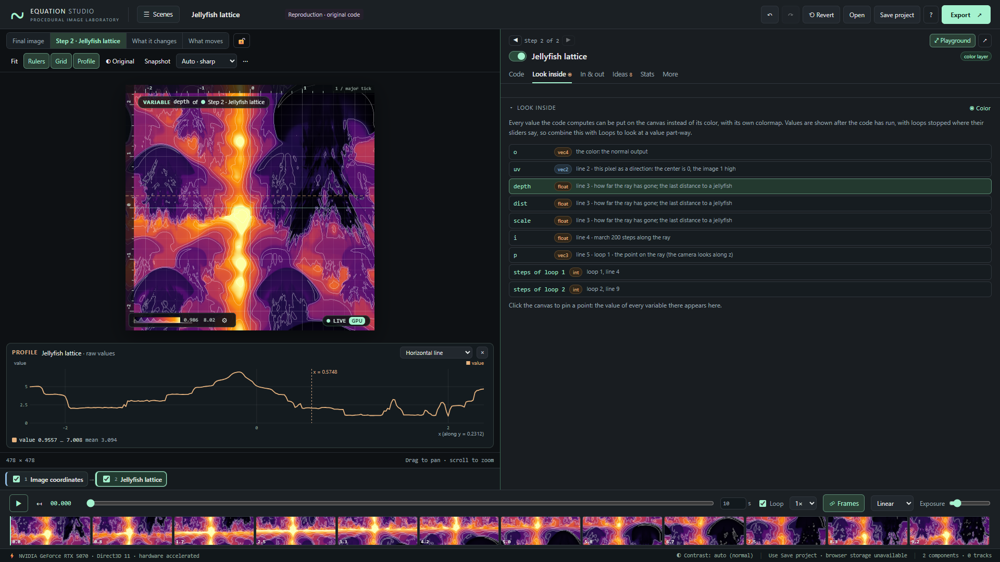
The second tab lists every value the code computes. First comes the
color o, then each variable with its kind and the line that
declares it, then the number of steps each loop took. The kinds are
given in plain words: a color, a number, 2
numbers, 3 numbers, a count or yes/no.
Click one to show it on the picture with its own color scale. A
raymarcher’s depth becomes a depth map, its last distance
shows how close each ray came to a surface, and a fractal’s
scale shows how deep it went. Values are shown after the
code has run, with loops stopped where their sliders say, so combine
this with Loops to look at a value part of the way
through. Click a point on the picture to pin it, and the value of every
variable there appears next to its name.
A Point cloud’s Math tab shows its point formula as typeset steps with captions, like any other math, with ✎ Edit. Its settings are the number of dots, their size, color and opacity (how see-through they are), the sketch size and the time. Just this part shows the dots over black, and the scene puts them over a background with Front over back. For a p5.js work, AS POSTED shows the original sketch.
＋ Add a part opens the Parts tab, which starts with the works. Click one to add it to the current scene as a credited picture. Then combine it with Add light or Front over back, or warp it through its input p. With ❄ Freeze here it becomes a still. The tips in the Parts tab show every part drawn on its own.
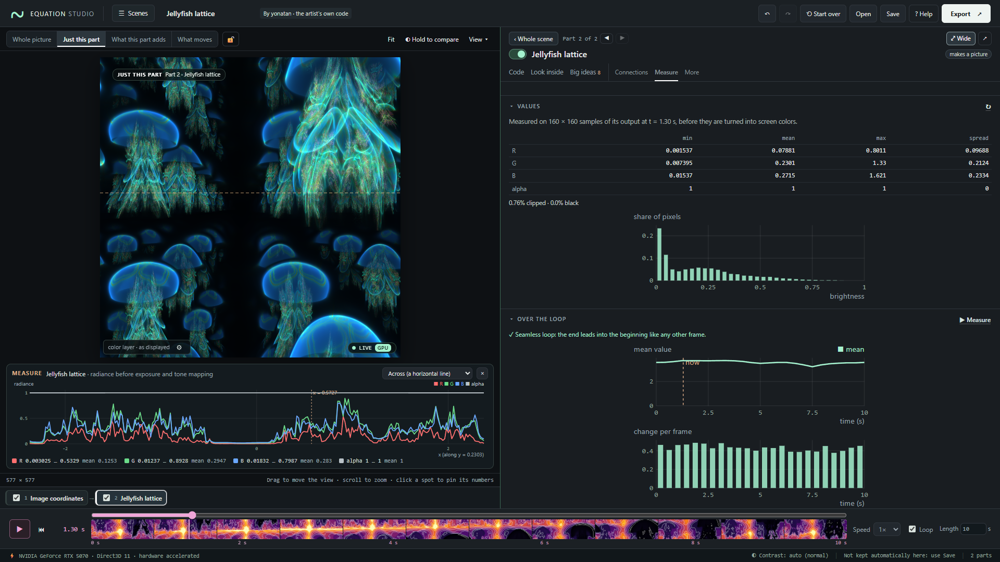
Nothing you try is hard to take back:
O, to see the scene as it was when you opened it. The
label on the picture says AS IT STARTED.Ctrl/⌘ Z, Ctrl/⌘ Shift Z) cover every edit,
including the camera, switching parts on and off, dragged letters and
numbers, applied edits and Try this.S, in the View menu)
bookmarks the scene and the time in Scenes ▸ Snapshots.
Up to thirty are kept in this browser; they are not part of the saved
file.▦ next to a setting opens a tray under the picture, with the picture drawn at seven values across the setting’s whole range. 🎲 Surprise me draws eight versions with the settings changed at random. The tray’s menus choose whose settings change (This part or Whole scene) and how far (A little, Some or A lot), and 🎲 Shuffle makes eight new ones. Hover a small picture to see it large on the main picture (labelled PREVIEW), and click it to keep it; Undo takes it back. The small pictures use the current view, so a sweep while the picture shows just one part shows how that part changes.
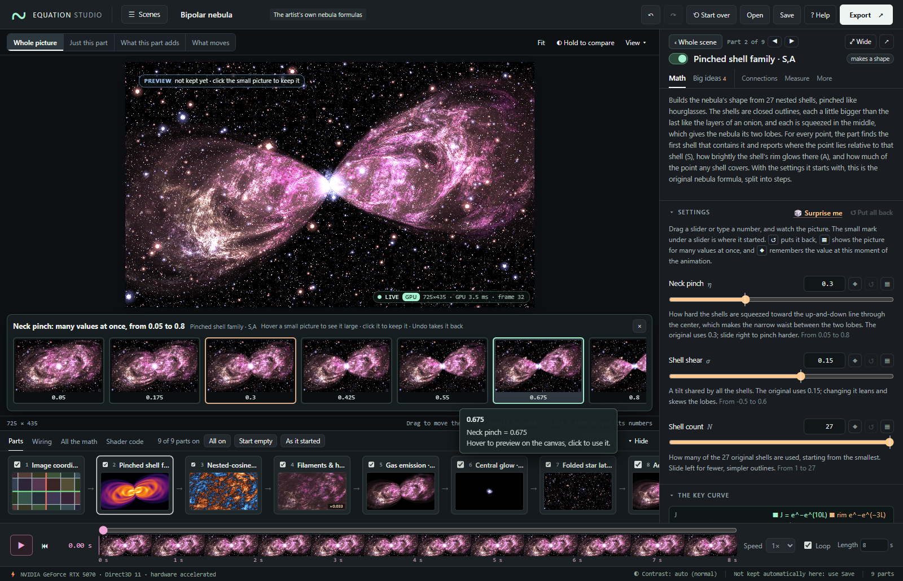
Every part has an on/off switch: a checkbox on its card in the parts strip and in the Wiring view, and the switch next to its name in the panel. Switching a part off makes the picture as if the part were not there (the part is bypassed):
The tip on each switch says exactly what that part will do when it is off. Switching a part on also switches on anything it needs. Above the parts strip, All on switches every part on. Start empty switches off every part that draws something, so you can switch them on one at a time and watch the picture build up. As it started brings back which parts were on when the scene was opened.
Switching parts on and off is instant: it never recompiles the shader.
＋ Add a part opens the library at its Parts tab: every building block, with a live search. Hover an entry to see what it does, its math and a small picture of it on its own. Click it to add it: its inputs connect to the open part when the kinds match, the new part opens, and the picture shows Just this part. You can also drag it onto the Wiring view: onto an input dot (it is added and wired into that input), onto a part card (wired into its first input that fits) or onto the picture. Choose ⇥ Keep open first when you want to drag several.
In the panel’s Connections tab, ＋ on a connected input puts a new part in between that input and whatever feeds it. More ▸ Swap for… swaps the part for another that makes the same kind of thing, and keeps its connections wherever they fit. The Filament ring scene is the Bipolar nebula with its shape part swapped exactly this way.
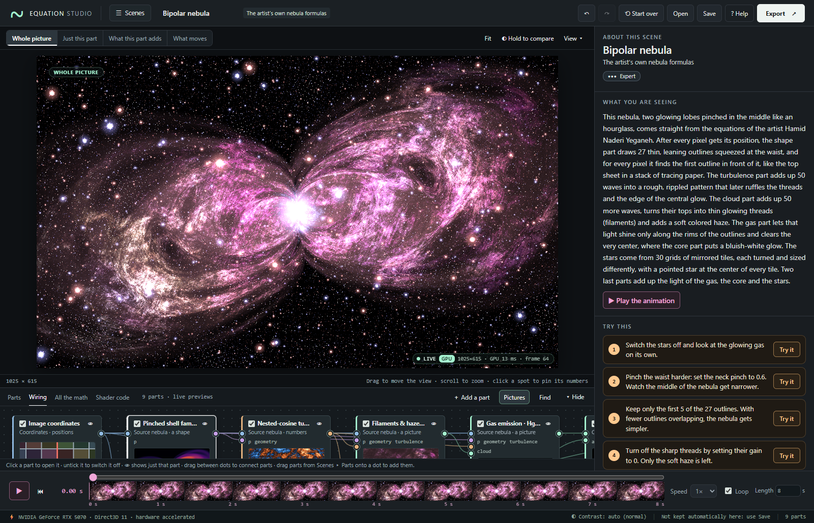
The Wiring tab shows how the parts are connected,
laid out automatically from the first parts to the last. Cards have a
colored edge and colored dots for the kind of thing they carry: blue for
positions, amber for numbers, violet for a shape, green for a picture.
Each card has its switch, a 👁 button that opens the part and shows it on
the picture (Just this part), and, with
Pictures on (P), a small live picture.
Hover a card to dim everything that has nothing to do with it.
Drag from an output dot to an input dot to connect them (the inputs
that fit light up), or click one and then the other. Drag a wire off an
input to disconnect it. The studio refuses connections that would go
round in a circle or mix kinds. Find (L)
scrolls to the open part. While the Wiring view has focus,
Delete removes the open part and Ctrl/⌘ D
duplicates it.
The Shader code tab shows the program the graphics
chip runs for the current view. Each part’s statement is labelled with
its id, and its settings are named like n3_radius.
Copy code copies it.
M, above the picture)
compares the picture now with the picture a tenth of a second later.
Pixels that change keep their color, and still ones turn gray. The menu
next to it switches from Changing pixels to
Trails: the last half second at once, like a
long-exposure photo.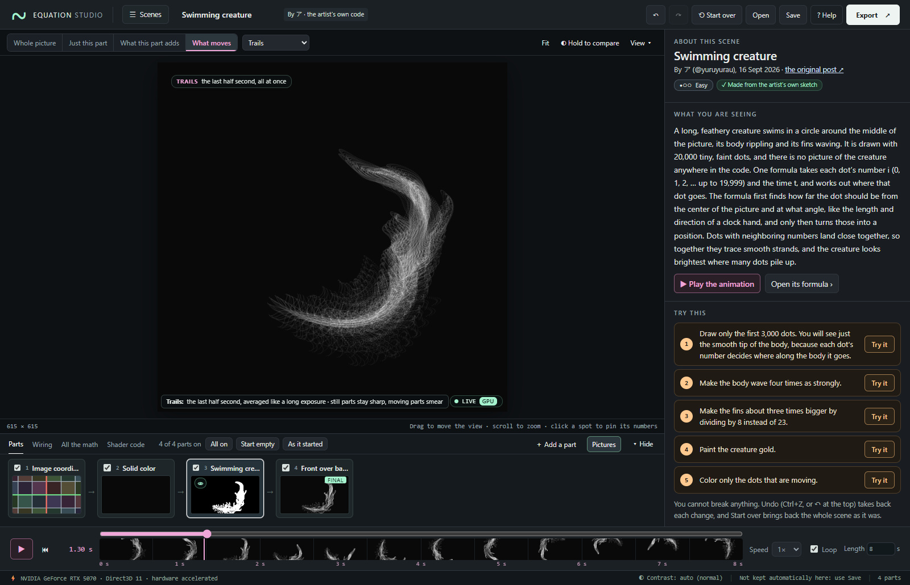
▶ (or Space) plays and pauses, and
⏮ goes back to the start. , and
. step one frame at 24 frames per second, and
Home and End jump to the start and the end.
The time is shown in seconds, in pink (2.54 s). Drag the time
bar to move through the animation. The frames sit right under it, and
under them a ruler marks round numbers of seconds (0 s, 5 s, 10 s…).
Speed only changes how fast the animation plays while
you watch. Loop starts it again at the end, and
Length is how long it is, in seconds. Length, Loop,
Brightness and Light to color (both in
the View menu; The artist’s formula, Soft highlights
or Plain) are saved with the scene.
Click ◆ next to a setting to remember its value at
this moment: a keyframe. The ◆ turns pink. After that, changing the
setting at another time adds or updates a keyframe there, and the
setting glides between its keyframes while the animation plays. Each
setting with keyframes gets a lane under the time bar. Click the lane to
go to that time, click a keyframe to jump to it, and drag a keyframe to
move it in time. In the part’s More ▸ Keyframes, choose
how the setting moves between keyframes (smooth, linear or hold), or
delete keyframes and tracks. Settings made by param lines
in math or code animate the same way. See Animation for the exact rules and why exports
come out the same every time.
Export makes a still picture (PNG with the whole scene saved inside it, JPEG or WebP) or the whole animation. For an animation you can choose an MP4 with every frame at its exact time, a looping GIF or animated PNG, a sprite sheet, a PNG sequence that comes out the same every time (with the scene and a manifest), or a WebM recorded as it plays. It can also make a web page that plays the scene live, or the open part’s shader code for twigl.app, with its credit. When the picture shows just one part or what a part adds, a checkbox exports that view instead of the whole picture, in the colors the picture shows (a part keeps the color range it has on the picture for every frame). Details and limits are in Animation and export.
◐ Contrast in the footer (or K) cycles
through auto, high and normal. Auto
follows your system’s setting (prefers-contrast: more). High contrast
uses a black background, white text and borders, brighter code colors
and a strong yellow ring around the control that has keyboard focus.
Every control stays usable with the keyboard.
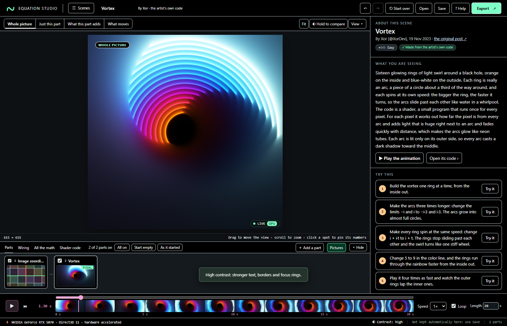
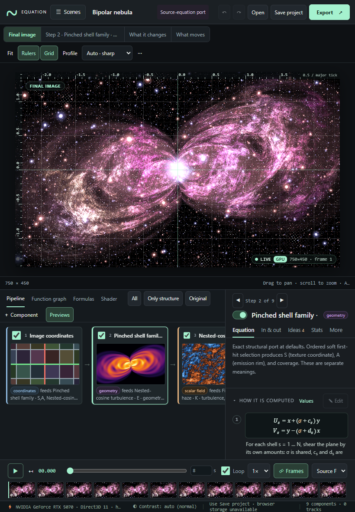
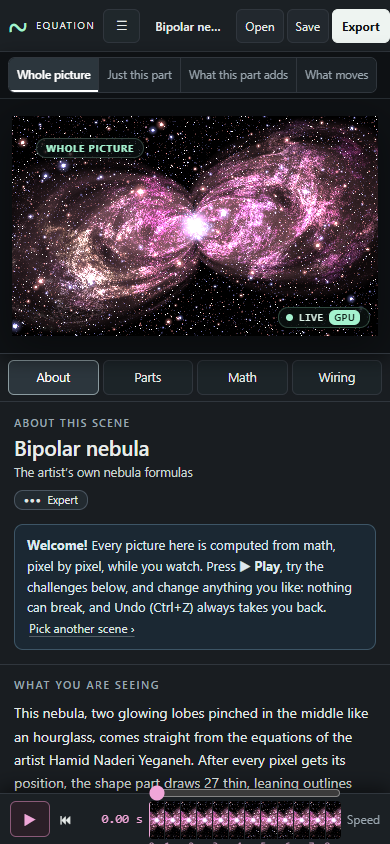
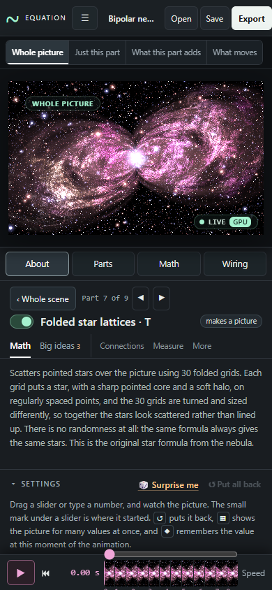
Single-key shortcuts work when no text field or dialog has focus. ? Help lists the same keys.
| Keys | Action |
|---|---|
Space |
Play / pause |
Home / End |
Go to the start / end |
, / . |
One frame back / forward |
[ / ] |
Open the previous / next part (the picture keeps its view) |
I |
Just this part (press again for the whole picture) |
C |
What this part adds (press again for the whole picture) |
M |
What moves (press again for the whole picture) |
K |
Contrast: auto, high, normal |
E |
Open or close the wide panel |
V |
Show or hide Measure along a line |
Esc |
Back out one step: close the library, cancel a connection, close the tray of small pictures, stop a build-up, unpin a reading, show a code part’s color instead of a value, leave an unchanged edit, go back to the whole picture, close the wide panel |
| arrow keys on a code number | Change the number (Shift: ten times more) |
hold O |
Compare with the scene as it started |
P |
Small pictures on or off |
R / G |
Rulers / grid on or off |
F |
Fit: back to the starting view |
S |
Take a snapshot |
L |
Find the open part in the Wiring view |
Ctrl/⌘ Z, Ctrl/⌘ Shift Z |
Undo, redo |
Ctrl/⌘ S |
Save the scene as a .json file |
Ctrl/⌘ D |
Duplicate the open part |
Ctrl/⌘ Enter |
Apply the edit (math or code) |
Delete / Backspace |
Delete the open part (while the Wiring view has focus) |
Alt-click the picture |
The raw value at one spot, in a message |
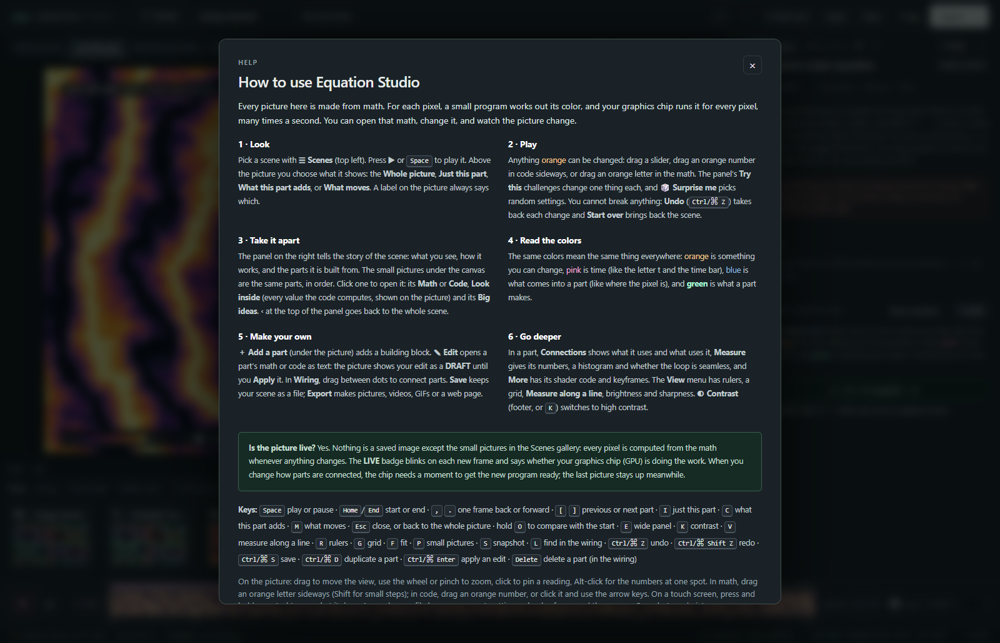
Your scene is saved in this browser’s storage a moment after every edit, together with the scene as it was opened, so Hold to compare, ↺ and Start over still work after a reload. The footer says whether this works here: Kept in this browser · nothing is uploaded, or Not kept automatically here: use Save. Your preferences are stored the same way: the sharpness, rulers, grid, small pictures, Measure along a line, the colors for parts that have none, the tab under the picture, the height of the parts strip and whether it is folded away, the panel widths, the wide panel, whether the library is kept open, the contrast, the speed, the frames on the time bar, whether shader numbers are compiled as constants, and whether you have chosen a scene from the gallery (so that it stops opening by itself). Snapshots are kept there too. Edits you have not applied are not saved. Browser storage can be unavailable or cleared, so Save is the backup you can carry around. Pictures you compare with are never stored.